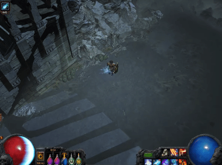
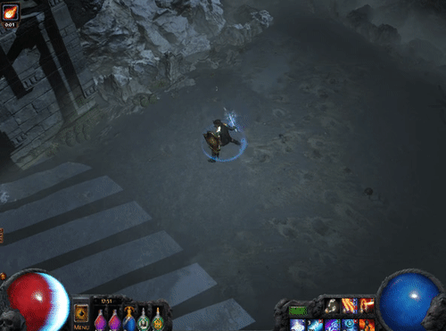
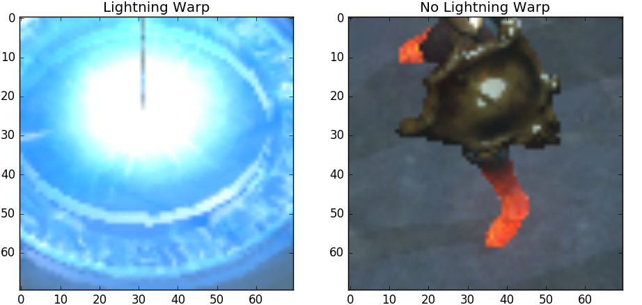

PoE AI Part 3: Movement and Navigation
Wed, 19 Jul 2017
Bot, Computer Science, Gaming, Machine Learning, Path Of Exile, Poe, Python, Security, Software
This post is part of a series on creating an AI for the game Path of Exile © (PoE). In this post, techniques for moving the character around a level are explored.The Movement Map Class
In PoE, movement is typically accomplished by using the left mouse button to click on a location. The player then typically moves to the location of the mouse click. Figure 1 shows an example of moving the player using a mouse click.
Figure 1: Player Movement
Now, in order to accomplish navigation, the AI maintains a data structure which represents a map of the world. A mapping of coordinates to location type is maintained to accomplish this. For example, at a given time, the AI might have the data shown in Table 1 in its internal map.
| World Point | Type |
|---|---|
| \((0,0,0)\) | Open |
| \((1,0,0)\) | Open |
| \((0,-1,0)\) | Obstacle |
| \((1,1,0)\) | Obstacle |
| \((-1,-1,0)\) | Open |
Table 1: The Internal Map
The map records locations that have been visited along with their type. The type identifies if the player can move to the location (it maps to "Open") or if the player cannot (it maps to "Obstacle"). With such a map in place, breadth-first search can be used to find a shortest path from one location to another.
Mapping Between Dimensions
Now assume the player is at location (0, 0, 0) and is to move to (1, 1, 0). Where on the screen should the mouse click be performed? Recall from a previous post, that a projection matrix was calibrated, allowing for more accurate approximation of the player's location in 3D coordinates. Thus, the point (1, 1, 0) is transformed by the projection matrix to determine its location on the screen. This is the location where the mouse click should be performed.In practice, I found the "movement only" skill to be too inaccurate in terms of where the player will move. This is especially the case when the mouse click is performed on an obstacle. In this case, the player typically moves nearby the mouse click. An example of this is shown below in Figure 2.

Figure 2: Moving Towards an Obstacle
The video shows the result of a mouse click that is performed over an obstacle. Note that the player moves towards the mouse click but stops at the obstacle.
Using Lightning Warp
Unfortunately, cases like the one shown Figure 2 can cause the AI's internal map to become out of sync with reality. To get around this somewhat, I decided to use the skill lightning warp for movement. Figure 3 shows the lightning warp skill being performed 3 times.

Figure 3: Lightning Warp
Lightning warp has the advantage of being more black and white in terms of movement; either the player moves to the mouse location or the player does not. This helps to keep the AI's location in its internal map and the player's actual location more in sync. Thus, in order to move to a location \(x\), the AI projects the point \(x\) onto the screen, moves the mouse to that location, then triggers the appropriate key to perform lightning warp.
A Movement Detector
Now, the only remaining challenge is to determine if lightning warp was successfully performed or not. If the mouse is over an obstacle, the player will not perform lightning warp. In order to accurately predict this, a binary classifier is constructed which takes as input a portion of the screen and predicts whether lightning-warp is currently taking place. A 70x70 rectangle around the character is extracted from the screen and used as input to the model.In order to build the model, a data set is manually constructed from still images of the game. Figure 4 shows samples taken from the data set.

Figure 4: Lightning Warp Classifier Data
Code to perform prediction follows. The below code assumes the file LWTrain.csv has multiple rows of the format: filename,Y/N. In each row, filename is the path to an image file described above, and Y indicates the image shows lightning warp being performed, while N indicates the opposite.
class TargetingSystem:
def __init__(self):
#...
self.lwlr = self.MakeLWDetector() #Logistic regression determines if lightning-warp is being performed
self.RS = (35, 35)
#....
#Use classifier to determine if LW is occuring
#im: The image of the screen
#pos: Position of the character on the screen
def DetectLW(self, im, pos):
detr = im[(pos[1] - self.RS[0]):(pos[1] + self.RS[0]), (pos[0] - self.RS[1]):(pos[0] + self.RS[1])]
r = self.lwlr.predict(detr.reshape(1, -1))
if r == 'Y': #Y indicates LW is being performed
return True
return False
#Fits a model for predicting character status
#M: The model to fit
#trnFn: Filename of the training data
#SF: Score function for evaluating the model
def FitStatusModel(self, M, trnFn, SF):
RM = self.RestoreStatusModel(trnFn)
if RM is not None:
return RM
RX, RY = [], []
with open(trnFn) as lwtf: #Load dataset from file
for l in lwtf:
sl = l.strip().split(',')
RX.append(imread(sl[0]).reshape(-1))
try:
RY.append(float(sl[1])) #Floating point data is for regression models
except ValueError:
RY.append(sl[1]) #Strings are labels for classification
A = np.stack(RX)
Y = np.stack(RY)
trn, tst = next(ShuffleSplit().split(A)) #Use cross-validation to estimate results
M.fit(A[trn], Y[trn])
YH = M.predict(A)
s1, s2, s3 = SF(Y[trn], YH[trn]), SF(Y[tst], YH[tst]), SF(Y, YH)
print('LW CV:\nTrn:{:8.6f}\tTst:{:8.6f}\tAll:{:8.6f}'.format(s1, s2, s3))
M.fit(A, Y) #Train the final model with all data
joblib.dump(M, self.GetModelFN(trnFn))
return M
#Gets the file name for the saved model
def GetModelFN(self, trnFn):
if trnFn == 'LWTrain.csv':
return 'LWDetLR.pkl'
elif trnFn == 'LCTrain.csv':
return 'LCRegLR.pkl'
elif trnFn == 'MCTrain.csv':
return 'MCRegLR.pkl'
return None
#Creates a classification model which is used to determine if lightning warp is occuring
#in a given image
def MakeLWDetector(self):
return self.FitStatusModel(LogisticRegression(), 'LWTrain.csv', Acc)
def RestoreStatusModel(self, trnFn):
jlfn = self.GetModelFN(trnFn)
try:
return joblib.load(jlfn)
except FileNotFoundError:
pass
return NoneThus, after triggering the appropriate key, the AI then calls the DetectLW function above (repeatedly) to check if the move was successful. On success, the character's position on the map is updated. If lightning warp is not detected within a certain period, it is assumed the move failed and the player's location on the map does not change.